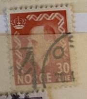
| SOURCE | TITLE| IMAGE MATCH | click to source page |
| eBay | Norway Stamp 1951-1952 King Haakon VII 30 ore (JBX) | eBay | 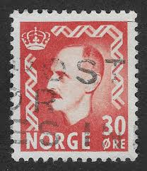 |
| HipStamp | Norway 1951 Sc#323 SG#437 30ore Red King Haakon Used | Europe - Norway, General Issue Stamp / HipStamp | 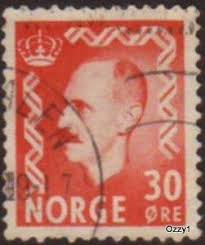 |
| eBay Australia | 1951-1952 Norway - King Haakon VII, Extra Values - 30 Ore Stamp | eBay Australia | 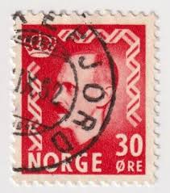 |
| PicClick UK | NORWAY, NORGE, 1958, Stamp 386 King Olav V, Obliterated, Cancel Stamp £1.00 - PicClick UK | 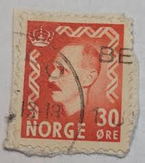 |
| eBay | Red Norwegian Stamps for sale | eBay | 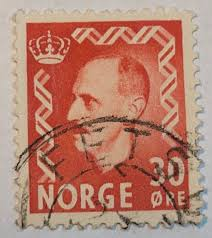 |
| PicClick | Bundleware Stamps FOR SALE! - PicClick | 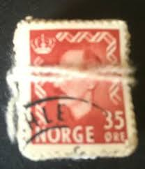 |
| Alamy | NORWAY - CIRCA 1951: a stamp printed in the Norway shows Arne Garborg, poet, circa 1951 Stock Photo - Alamy | 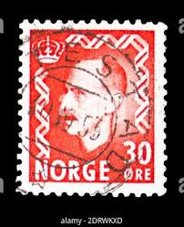 |
| eBay | Norway stamps - King Haakon VII 30 Norwegian øre 1951 Red Sg:NO 421 | eBay | 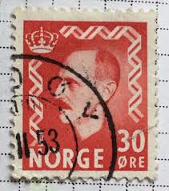 |
| eBay UK | Norway 1955-57, NK 432 Son Øverbygd 15-X-56 (TR) | eBay UK | 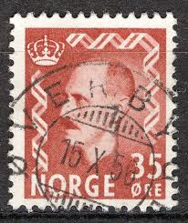 |
| alamyimages.fr | Norvège - circa 1950 : timbre imprimé en Norvège montre portrait du roi Haakon VII (1872-1957), sans inscriptions, du ser Photo Stock - Alamy | 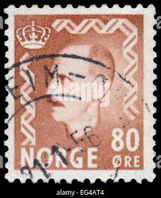 |
| eBay | Norway 1955-57, NK 432 Son Innvik 9-XI-57 (SF-Grade 5) | eBay | 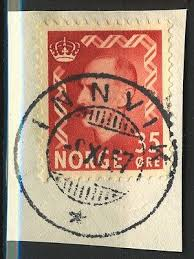 |
| HipStamp | Norway #321 1951 used surcharge 30 on 20ore red | Europe - Norway, General Issue Stamp / HipStamp | 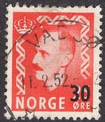 |
| Shutterstock | 97+ Thousand Norway Norwegian From Postage Stamp Royalty-Free Images, Stock Photos & Pictures | Shutterstock | 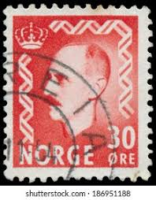 |
| eBay | NORWAY/NORGE Postage ~ King Haakon VII ~ 30 øre Red Stamp ~ Posted ~1952 ~ Y58 | eBay | 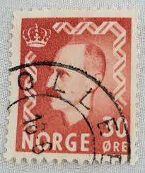 |
| eBay | NORWAY 317 (Mi368) - King Haakon VII "1951 Chestnut Brown" (pf2683) | eBay | 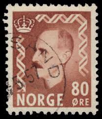 |
| ebid.net | Australia 1983 World Communications Year 27c Used Stamp. on eBid United Kingdom | 215789056 | 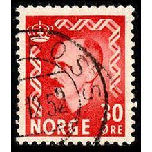 |
| Has Norway ever sought a U.S. postal stamp for Snowshoe Thompson? | 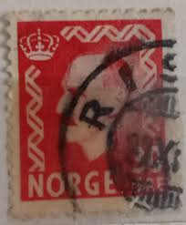 | |
| eBay | 1951 Norwegian Postage Stamp King Haakon VII 30 Norwegian Ores Red Canceled | eBay | 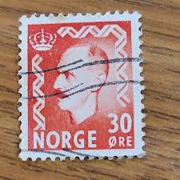 |
| eBay | Norway - 1955 -1956 King Haakon VII - New values #1 | eBay | 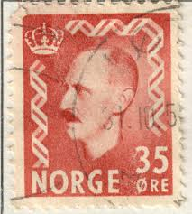 |
| eBay | Norway Stamp 1950-1951 King Haakon VII 25 ore (JBX) | eBay | 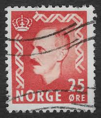 |
| Dreamstime.com | 2,056 Norway Shows Stock Photos - Free & Royalty-Free Stock Photos from Dreamstime - Page 3 | 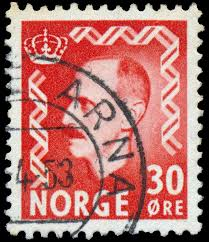 |
| Blogger.com | Heritage of India stamps site: Norway stamps collection | 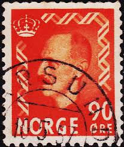 |
| eBay | Norway 1955-57, NK 432 Son Stavang i Sunnfjord 30-XI-57 (SF-Grade 5) | eBay | 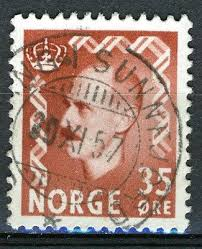 |
| Shutterstock | Norway Stamp: Over 1,906 Royalty-Free Licensable Stock Photos | Shutterstock | 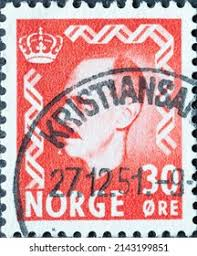 |
| BalkanAuction | Postage stamps | Philately | Collectibles | BalkanAuction | 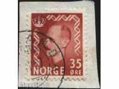 |
| The RainKey | Rest of the World – Page 6 – The RainKey | 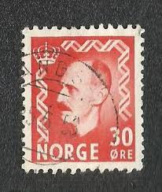 |
| BalkanAuction | Timbre poștale | Filatelie | De colecție | BalkanAuction | 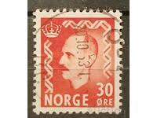 |
| allnumis.com | 30 Ore 1950 - King Haakon, Royalty - Norway - Stamp - 7762 | 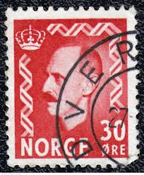 |
| PicClick FR | NORVEGE NORGE 1950/52, timbre 322 COR POSTE, oblitéré, VF CANCEL STAMP EUR 1,99 - PicClick FR | 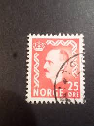 |
| eBay | Norway 1951, NK 410 Son sw Innfjorden (MR-Grade 5) | eBay | 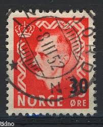 |
| allnumis.com | 35 Ore 1951 - King Haakon, Royalty - Norway - Stamp - 7763 | 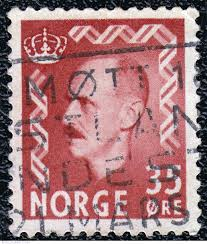 |
| Dreamstime.com | 4,808 February Norway Stock Photos - Free & Royalty-Free Stock Photos from Dreamstime - Page 30 | 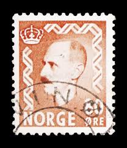 |
| eBay | NORWAY/NORGE Postage ~ King Haakon VII ~ 30 øre Red Stamp ~ Posted ~1952 ~ O18 | eBay | 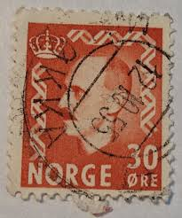 |
| Flickr | Noruega | Rodrigo Caneva | Flickr | 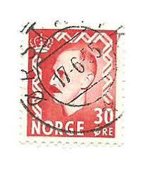 |
| eBay | Las mejores ofertas en Rojo usado sellos de Noruega | eBay | 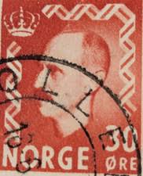 |
| Flickr | Jurgensellos | Flickr | 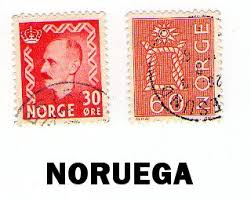 |
| ebid.net | NORWAY, King Haakon VII, red 1951, 30ore, #5 on eBid United States | 218533045 | 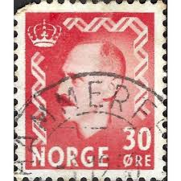 |
| eBay | NORWAY 1941 MNH LEGIONARY NORWEGIAN AND FINNISH FLAGS | eBay | 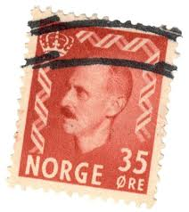 |
| Shutterstock | Norway Circa 1950 Stamp Printed Norway Stock Photo 113981596 | Shutterstock | 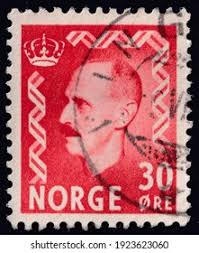 |
| Alamy | Postmarked stamp from Norway in the King Haakon VII series issued in 1956 Stock Photo - Alamy | 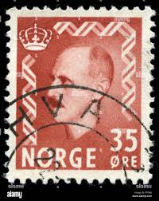 |
| eBay | NORWAY:1950-52 SC#312,323 Used King Haakon VII T | eBay | 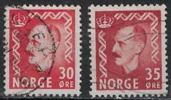 |
| eBay | Красные б/у норвежские марки - огромный выбор по лучшим ценам | eBay | 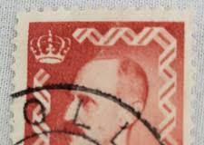 |
| PicClick UK | NORWAY USED STAMP - King Haakon VII Definitive, 1946 - Green 1 Krone, SG 380 £1.17 - PicClick UK | 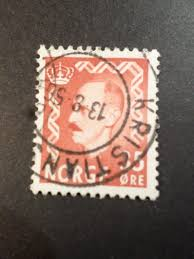 |
| Todocolección | noruega - valor facial 30 ore (30 centimos de c - Compra venta en todocoleccion | 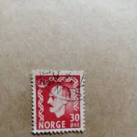 |
| eBay | Greenland #Mi065 Used 1965 King Frederick IX Definitives [59] | eBay | 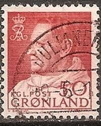 |
| Etsy | Norway Stamps Mixed Set 1900's to 1973 - Etsy Canada | 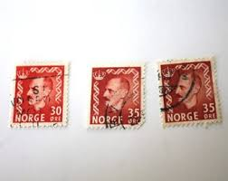 |
| Pngtree | Một Công Chúa được Miêu Tả Trên Một Con Tem Đan Mạch Vào Khoảng Năm 1980 Hình Chụp Và Hình ảnh Để Tải Về Miễn Phí - Pngtree | 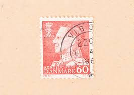 |
| Todocolección | noruega - valor facial 30 ore (30 centimos de c - Buy Antique stamps of Norway on todocoleccion | 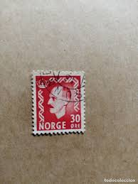 |
| eBay | GM222 Norway King Haakon VII (1950-1957) 30ORE Used 2 STAMP | eBay | 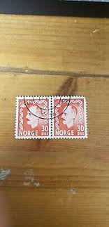 |
| vividagallery.com | Denmark King Frederik IX Red Stamp #1 Poster by Vivida Gallery - Vivida Gallery | |
| eBay | 1938-1944 Newfoundland - Royal Family - 3 Cent Stamp Vermilion. vintage stamps. | |
| eBay | Postage Revenue 1D King George VI 1940s Used Stamp - #E19 | eBay | |
| PicClick FR | Timbres Norvege À VENDRE! - PicClick FR | |
| Todocolección | noruega nº yvert 1170/1** año 1996.centenario f - Buy Antique stamps of Norway on todocoleccion | |
| eBay | Красные норвежские марки - огромный выбор по лучшим ценам | eBay | |
| eBay | Denmark, Scott 385, Frederik IX, 1961-1963, used | eBay | |
| eBay | GM222 Norway 35ore King Haakon VII 1950 USED STAMP | eBay | |
| Shutterstock | 5+ Thousand Denmark Stamp Royalty-Free Images, Stock Photos & Pictures | Shutterstock | |
| eBay | Norway Stamp Scott #330, Used | eBay | |
| Shutterstock | Stamp Family: Over 7,655 Royalty-Free Licensable Stock Photos | Shutterstock |